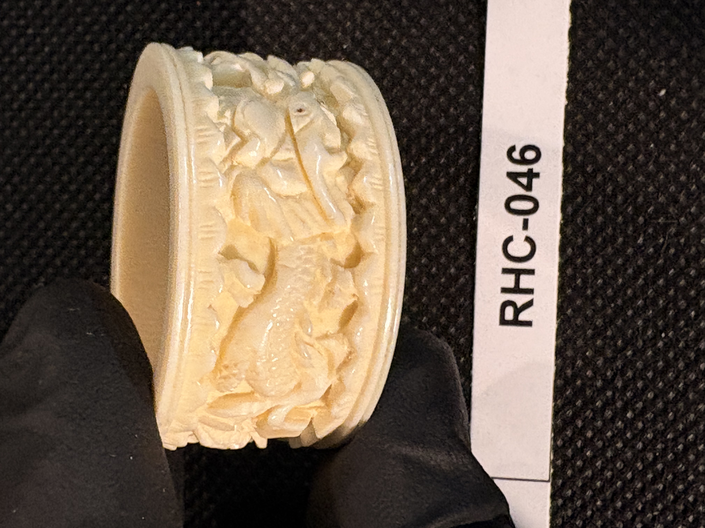
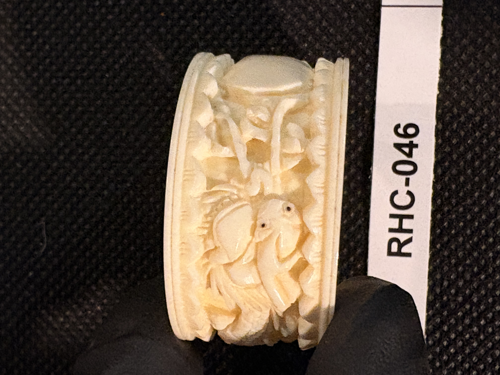
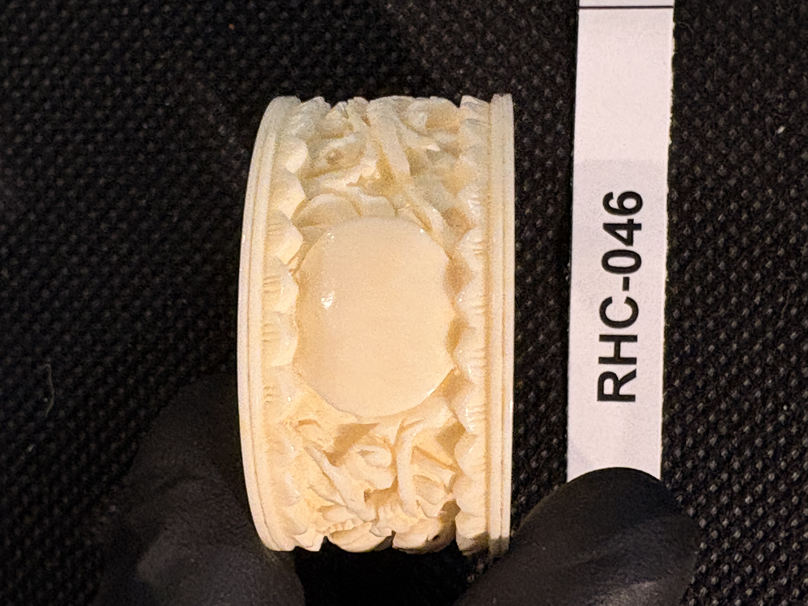
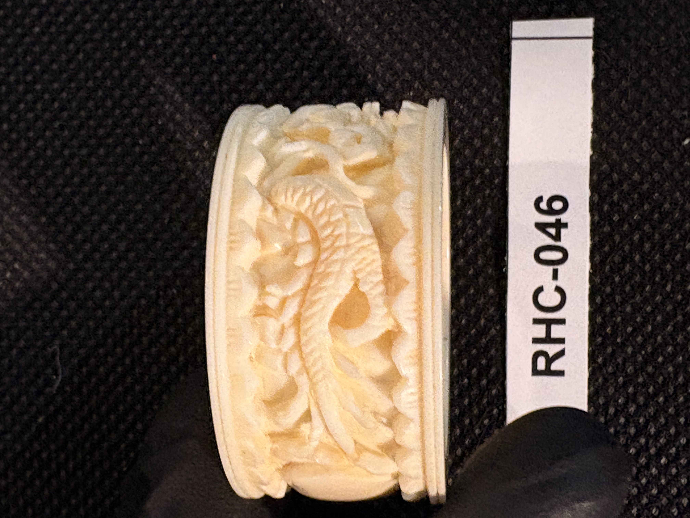
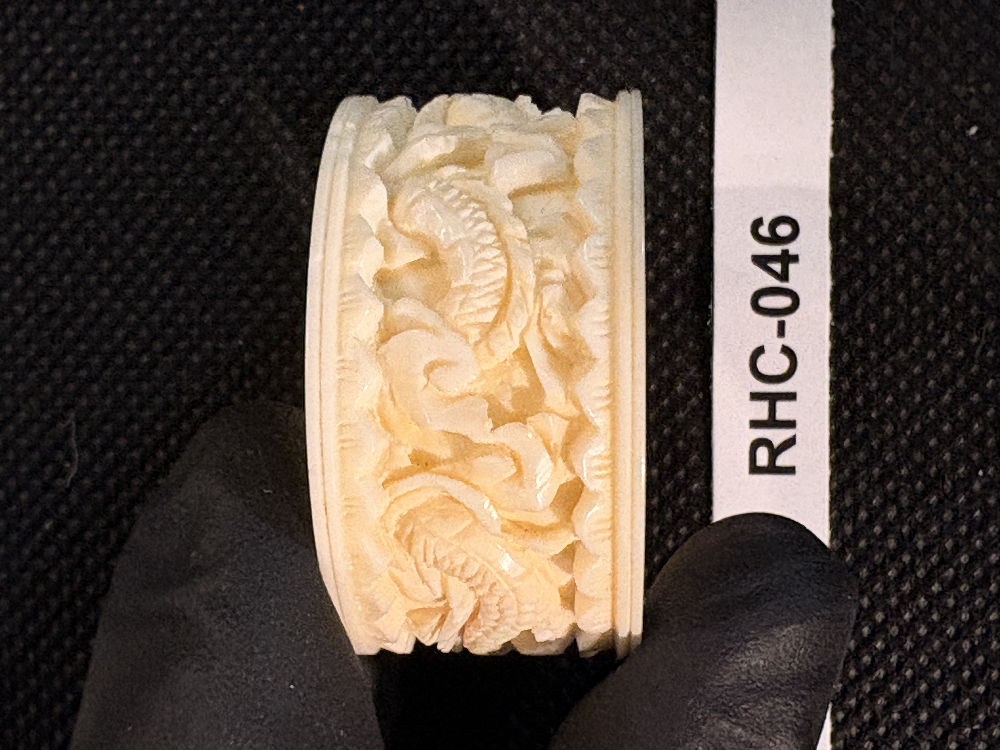
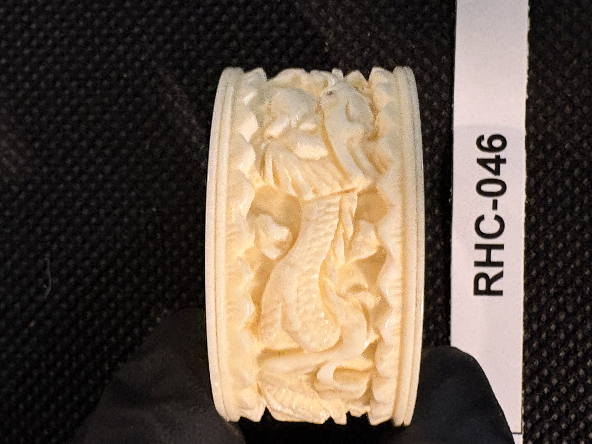

RHC-046 reviewed
Carved Ivory Napkin Ring with Menagerie Relief and Blank Monogram Cartouche






- Object Type
- A wide, thick-walled carved ivory napkin ring (open cylindrical band), its outer surface carved in continuous relief with a menagerie of animals amid dense foliage, interrupted by a smooth, blank oval cartouche evidently left plain for a monogram or initials that was never added.
- Material
- Presumed ivory (cream-white, dense, with light natural staining/mottling in the recessed relief carving).
- Dimensions (cm)
- No cm scale visible in these photos (item tag only); approximate size consistent with a standard napkin ring, roughly 4-5cm diameter x 3cm height — to be measured directly in phase 3.
- Subject Matter
- A continuous relief band depicting several animals within scrolling foliage: a pair of birds perched together (photos c/d), a long-necked serpentine or dragon-like creature with a scaled, curving body (photos b, f, g), and a horse- or deer-like quadruped (photo b) — an eclectic naturalistic/fantastical menagerie rather than a single narrative scene. A smooth, undecorated oval cartouche (photos d/e) interrupts the relief band, apparently intended for an engraved monogram or initials that was never carved.
- Artist Attribution
- unknown
- Date / Period
- undated (stylistic estimate: Victorian-era carved ivory napkin ring, Western or export manufacture)
- Mount / Display Stand
- None — unmounted, freestanding open-cylinder ring form.
- Color / Technique
- Dense continuous relief carving of animals and foliage around the full circumference, with a smooth polished blank oval cartouche left uncarved; natural material coloring only, no ink work or paint.
- Condition Notes
- Ring appears intact; carved relief edges show some expected wear/softening consistent with age and handling, but no visible cracks or losses across the 7 photos. Not physically examined.
- Distinguishing Features
- Most photographed item in the collection to date (7 photos), suggesting a larger/more complex piece warranting full circumferential documentation; the blank cartouche is notable as a monogram space that was never engraved with initials.
- Legal / Regulatory Status
- Material not confirmed. If genuine ivory, species and import history would need confirmation before any loan/sale (CITES/ESA/MMPA considerations). Flag for legal review; not a legal determination.
- Rights / Copyright
- Utilitarian/decorative object; no attribution or copyright concern anticipated.
- Keywords
- napkin ring menagerie relief carving blank cartouche monogram space birds dragon-like creature not flat-engraved
- Status
- reviewed
- Date Cataloged
- 2026-07-15
Open Research Questions
Research finding (phase 3, 2026-07-15): Confirmed carved ivory napkin rings with animal/menagerie motifs and a blank monogram cartouche are a well-documented late-Victorian/Edwardian tableware category (c. 1900), often sold as sets and sometimes left uninscribed for the buyer/recipient to personalize later (or simply never engraved) — this is a normal, common feature rather than an anomaly, which answers the original 'why blank' question. Supports a c. 1900 dating for this piece.